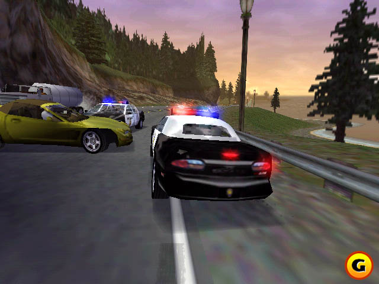
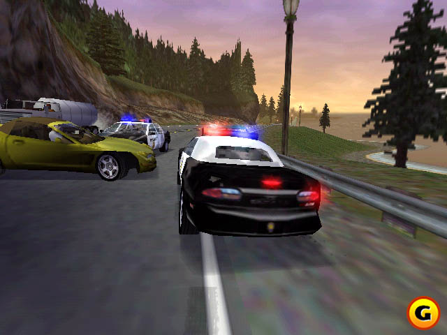

Play date: 2000
Developer: Electronic Arts
Publisher: Electronic Arts
Memo: best ost
Description: Just like its predecessors Need for Speed: High Stakes is an action racing game with a wide selection of exotic sports cars and many different types of tracks. The trademark Hot Pursuit mode game mode from the first game in the series is still present, where players race opponents on tracks filled with regular traffic and police cars that chase the racers. It is the first game in the series to introduce a Career mode with a set of challenges. Beating these is rewarded with trophies for unlocks, and money to spend on new cars, repairs and upgrades.
 
